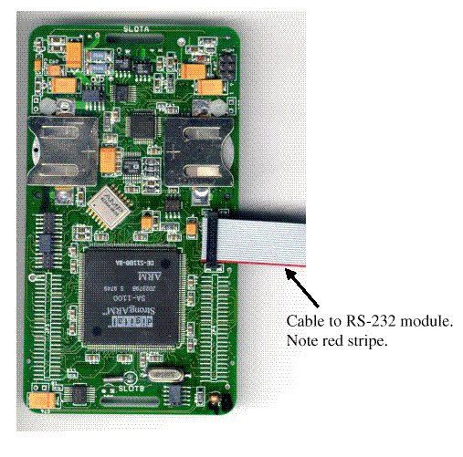
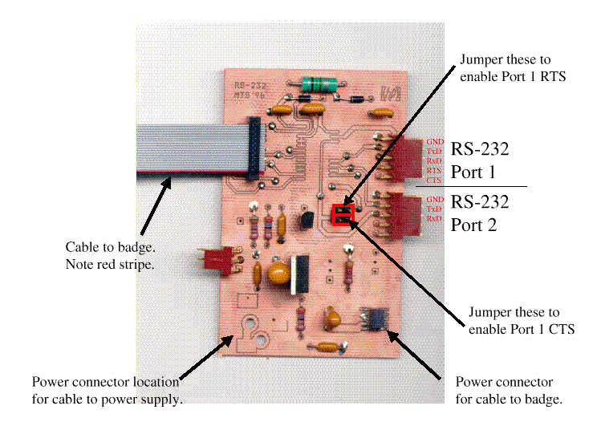

This board was designed by M. T. Smith to provide both two serial interfaces to the badge and to provide regulated 3V power to the badge.
The RS-232 interface is implemented using a Maxim MAX212 3V, 3 Driver/5 Receiver, True RS 232 Serial Port part. The board is capable of using either the TSSOP (mounted on the reverse of the board) or the the Wide SO package (mounted on the front of the card).
The serial ribbon cable connects from this card to JP1 on the SmartBadge. Pin 1 is the lower right pin of this connector block (as viewed with the HP logo in the board's upper right corner).
|  |  |
Details of the StrongArm's serial ports can be found in section "11.4 Serial Port 1 - SDLC/UART" of the StrongArm data sheet. The serial port 1 is a combination synchronous data link controller (SDLC) and universal asynchronous receiver/ transmitter (UART) serial controller. Details of using the serial port in UART mode are in section "11.6 Serial Port 3 - UART", where you can simply replace RXD3 and TXD3 with RXD1 and TXD1.
The StrongARM's Serial Port 1 has two signals:
| TXD1 | Serial Transmit Data |
| RXD1 | Serial Receive Data |
These are connect to the second and third pins (counting from the top of the upper connection (labeled Port A in the figure).
The StrongARM's Serial Port 1 has two additional signals when both the SDLC and UART interfaces are needed :
| UART_TXD (GPIO [14]) | Serial Transmit Data |
| UART_RXD (GPIO [15]) | Serial Receive Data |
These are connect to the second and third pins (counting from the top of the upper connection (labeled Port B in the figure).
The user can use these second two signal for CTS, RTS, DTR, and DSR if desired by using two jumpers, the upper one connects the UART_TXD to the 4rd pin of port A and the lower one connected the UART_RXD to the 5th pin of Port A.